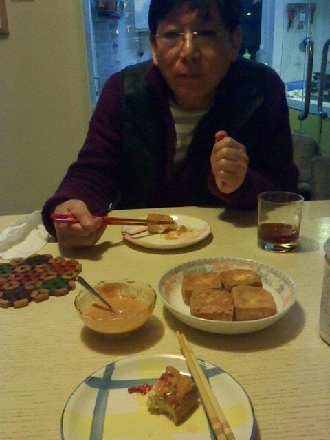

潘胜华－潘老师是最疼爱我的男声乐老师，真惭愧，昨天才去给他拜年，记得上次见面是去年秋天。老师经常白天短信我说“工作重要，有空给老师发个短信问好报平安就好，不用特地来看老师”，而我总是半夜才给他回“老师我想念你，等我忙这个工作就去看你”，唉！徒儿应该罚13大板阿！爸爸说“潘老师待你像女儿，老师对你付出的心血不比爸爸少，所以潘老师说的话一定要听，他骂你打你都要心甘情愿”
刚签约就去了潘老师那里学声乐，那时还没有开始工作，所以签约第一年大部分时间都是在老师家度过的，一周上三次声乐课，每次练声的运动量都要练到上气不接下气，甚至大脑缺氧，必须中途休息一下才能继续，但是以身作则的潘老师每堂课都会亲自示范每一种发声方式，尽管他每次都满头大汗都要坚持，直到我们领悟到了一点皮毛，他才勉强让我们过关。潘老师的那套练声方式真的很管用，但会用的真的不多，即使我已经会用，但是不练还是没用，导致我现在唱歌时气息比较不受控制。。。有三个人，当我唱歌给他们听时我最容易紧张和出错：冯老师（我老板）
，潘老师，常石磊
我发现自己很难专注一件事情超过10分钟，即使我看上去是专注的，但其实我已经在想别的事情，比如：第二天早饭吃什么。因此我要在兔年的时候突破一点点
潘老师的臭豆腐是天下第一的，他的油，火候，自制的酱料：色拉酱，番茄酱，三种辣酱，醋，花生酱。。。他的配方只有少数人见过，真的！！！没吃过的人是想象不到入口瞬间的幸福和感动的！
写到这里我觉得我饿了，缓解饿的最好方法就是立刻睡着，在睡之前我要说：潘老师！你对我所付出的心血我就不说了，下辈子都还不完，下辈子都要做您的徒儿！撇开这些不说，就你的厨艺，就那块臭豆腐！臭豆腐！潘老师！徒儿爱死你拉！晚安！想念潘老师！想念臭豆腐！
